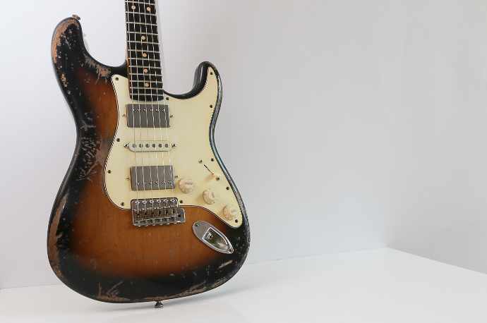

스트라토캐스터
스트라토캐스터(Stratocaster)는 미국의 악기 제조사, 브랜드인 펜더에서 생산하는 일렉트릭 기타 제품 중 하나이다.1954년에 처음 출시되었으며, 줄여서 스트랫(Strat)이라고 불린다. 
스트랫은 펜더사를 대표하는마스코트와 같은 제품이다.텔레캐스터나 재즈마스터같은 다른훌륭한 모델도 있지만, 지미헨드릭스, 조지 해리슨, 에릭클랩튼을 비롯한 수많은 전설적인기타리스트들이 스트랫을 이용하여유명해지면서, 펜더에서 가장대표적인 기타로 자리잡게 되었다.전문가나 연주자들 뿐만 아니라일반인들에게도 일렉트릭 기타를떠올릴 때 가장 먼저 생각나는 기타디자인으로서 가장 보편적이고 널리알려진 일렉기타 제품이다.